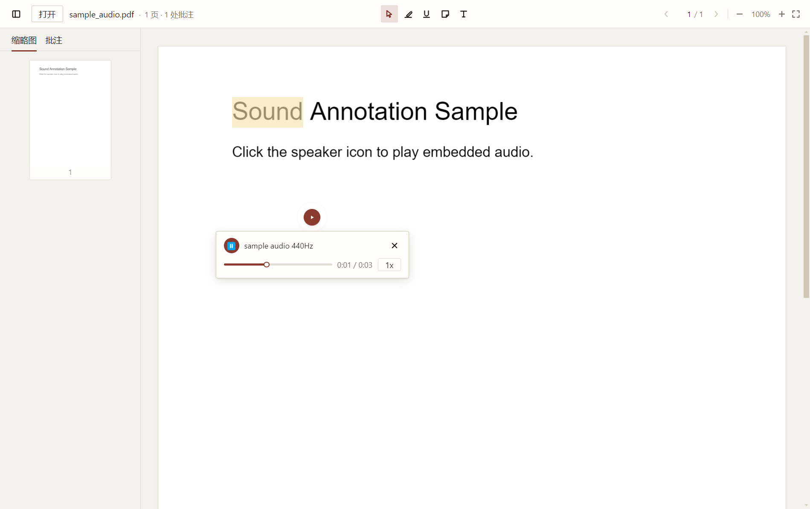

v0.1.0 · Windows x64 · 本地运行
PDF 阅读器
PDF 阅读器
把 Sound 注解放出声
Electron + TypeScript 写的桌面阅读器：连续滚动按需渲染、五种批注工具、解析 PDF /Sound 注解直接播内嵌音频。不联网，不写回原文件。
RUNTIME PROFILE
冷启动（60 页）~70 ms实测，开发机
常驻 canvas≤ 2离屏即释放位图
批注工具5指针/高亮/下划线/便签/文字
网络请求0无遥测、无账号
E2E 断言20CDP 驱动真实界面
写回原 PDF否旁注 JSON 独立存放

01 / CONTEXT
为什么需要一个新阅读器
常给孩子看英文自然拼读（Phonics）的 PDF 绘本，很多自带朗读音频。实测下来，除 Adobe 家的阅读器，其余几乎都播不出声音。这个功能很有用，却一直缺一个轻量实现。
不想用 Adobe：安装包太大、UI 太复杂。需要的只是能看、能简单批注、能播内嵌音频的小工具。过去独立开发成本太高，现在条件成熟，就做了。
「UI 说不上好看，但功能是真的能用。」
PLAYSAdobe Acrobat / Reader支持，但体积大
SILENT福昕等商业阅读器播不出声
SILENT浏览器内置 PDF 查看器播不出声
PLAYSu32-pdf-reader支持，约 78 MB
02 / CAPABILITIES
三条主线
读、标、听。没有插件系统、没有云同步、没有账户体系——所有能力都在本地一次装好。
READ / 01
按需渲染的连续滚动
pdf.js 管线，近处 700px 才画，离得 2600px 释放位图。
- canvas 上叠透明文本层，文字可选可复制
- 页码跳转 / Ctrl+滚轮 / Ctrl+0 适应宽度
- 侧栏缩略图按需渲染，可折叠
- 拖拽 PDF 进窗口即打开
ANNOTATE / 02
五种工具，状态单点持有
高亮 / 下划线 / 便签 / 文字 / 指针，快捷键 H U N T。
- 选中文字浮出工具条，一步成型
- 便签就地弹窗，点回可改，清空即删
- 旁注 JSON 存归一化坐标，缩放不漂移
- 原 PDF 只读，零写入
AUDIO / 03
Sound 注解直读
绕开 pdf.js 注解 API（拿不到原始流），自研扫描器取 /Sound 流，/FlateDecode 解压。
- 播放条锚定图标下方，非固定底栏
- 多音频互斥，切图标即切音源
- 进度可拖、0.5–2x 倍速、可暂停
- 边缘自动翻转，钳制在页面内
03 / SPEC
技术规格
| 项 | 取值 |
|---|---|
| 运行时 | Electron 33 · Windows 10 / 11 x64 |
| 语言 | TypeScript 5.7，strict 全开；渲染层原生 DOM，无 UI 框架 |
| 构建 | Vite 6（渲染层）· esbuild（主进程）· electron-builder（打包） |
| PDF 引擎 | pdfjs-dist 4.10，使用其 TextLayer |
| 基础库 | @vtxfp/vtxf-basic-tools-202607：Destroyable / react / watch |
| 资源回收 | 事件、IntersectionObserver、定时器、Blob URL 全部登记在 dispose() |
| 坐标体系 | 一律经 page.getViewport() 换算，不假设 612×792 页宽；落盘归一化 0–1 |
从源码构建 / BUILD FROM SOURCE
# 依赖（Electron 下载慢时加镜像） npm install # 开发：vite 5173 + electron npm run dev # 校验与产物 npm run typecheck # tsc --noEmit npm run dist # NSIS 安装包 -> out/ npm run pack # 免安装绿色版
04 / LIMITS
明确的边界
LIMIT单窗口、单文档，没有标签页
LIMIT批注只存旁注 JSON，不写回 PDF；换机需连
.annotations.json 一起拷LIMIT只提取 Sound 注解的声音流；RichMedia / 视频注解不处理
LIMIT仅浅色主题；token 已按「换 token 即换肤」组织，暗色未实现
下载
Windows 10 / 11 x64。安装包可选目录；绿色版解压即用，不写注册表。
// 占位：正式地址待发布后替换
- 安装包NSIS ~78 MB
- 快捷方式u32 PDF 阅读器
- 系统Win 10 / 11 x64
- 联网none
- 原文件read-only